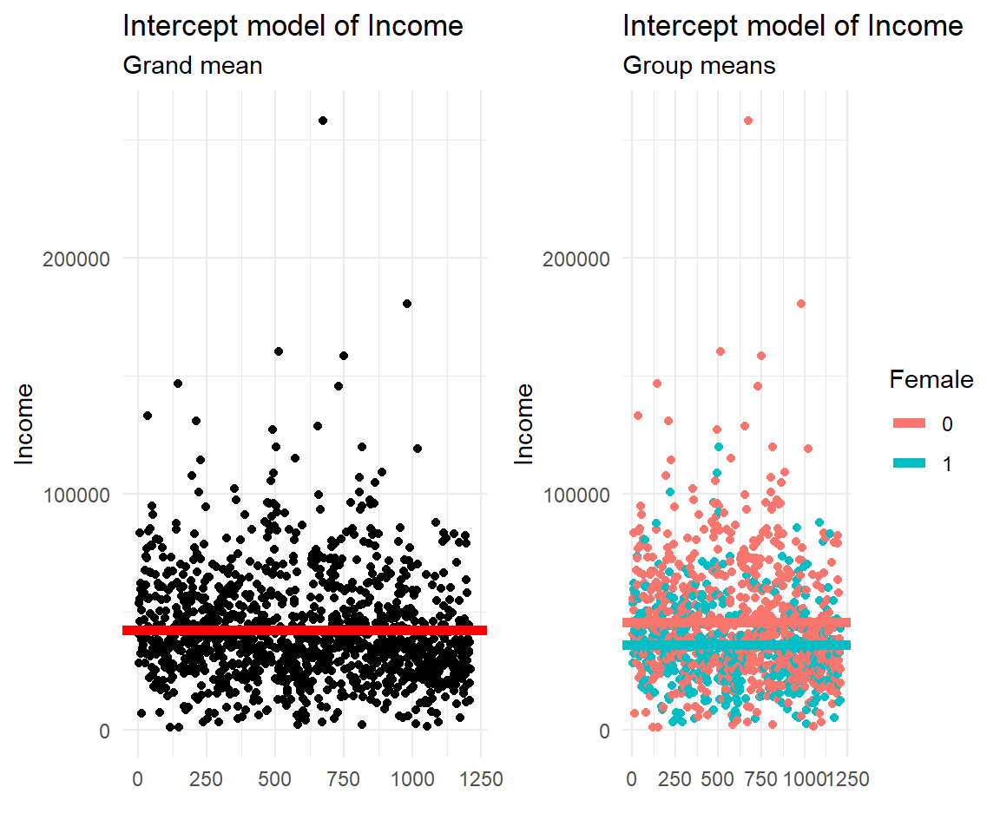
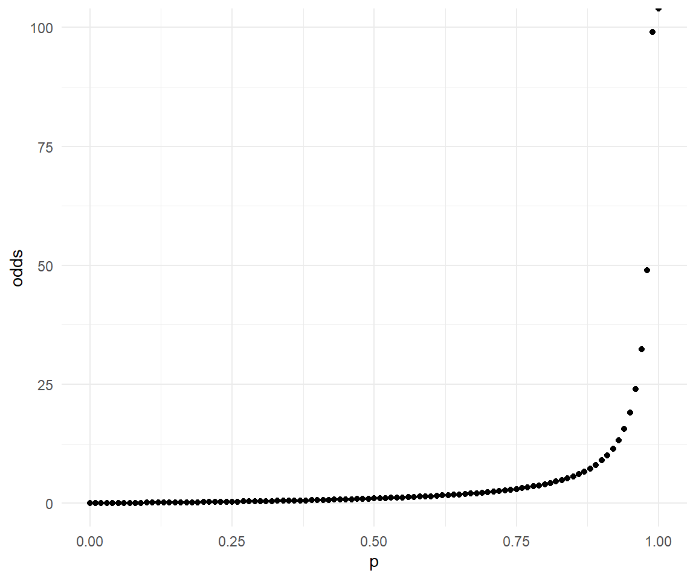
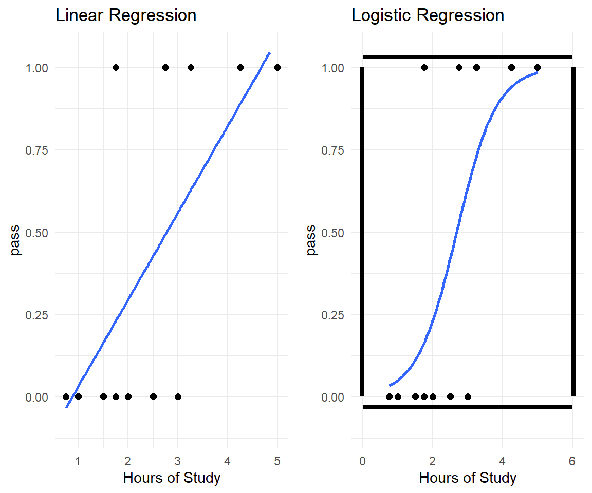
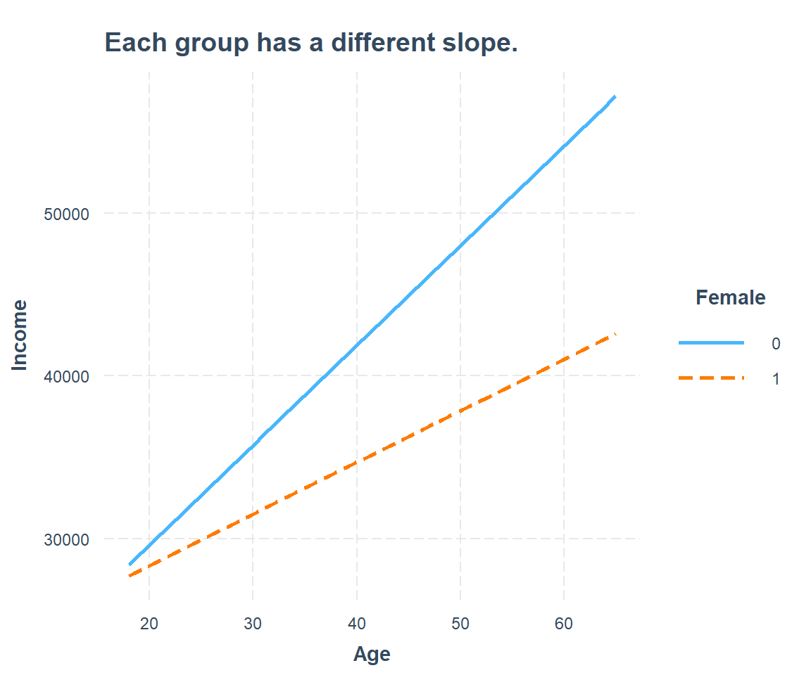

Chapter 13 Logistic Regression
Logistic regression is the appropriate regression analysis to conduct when the dependent variable is dichotomous (binary).
13.1 Think inside the box
The table contains data on the relationship between hours of study and the outcome of an exam (pass/fail) sorted ascending for study hours. The pass outcome is coded 1 for "Yeah, I passed the exam" and 0 for "I'll be back".
Linear regression is agnostic to the structure of the data. lm() fits a linear model to the data. Logistic regression acknowledges the floor and ceiling of values between 0 and 1. It squeezes the line to a squiggle inside the box. Well, the x-axis don't necessarily have this restriction.

It is usually difficult to model a variable which has restricted range, such as probability. Get around the restricted range problem with a transformation.
13.2 From probability to odds
Everybody has a good sense for probability. Not so for odds.
- Let’s say that the probability to pass the exam is \(0.8 = 80\%\).
- Then the probability of failure is \(1 – 0.8 = 0.2 = 20\%\).
The odds of passing the exam are defined as the ratio of the probabilities: \(\text{odds} = \frac{0.8}{0.2} = 4\). That is to say that the odds of passing are 4 to 1. Odds provide a measure of the likelihood of a particular outcome.
Probability is naturally restricted between 0 and 1, what about odds? Odds range from 0 to positive infinity.

The transformation from probability to odds is a monotonic transformation, meaning the odds increase as the probability increases or vice versa.
13.3 From odds to log of odds
The log() of values between 0 and 1 is negative, above 1 positive. Logodds range between negative and positive infinity. Range problem solved.
Imagine you flip the axes, doesn't this look like the initial S curve we were looking for?
13.4 Titanic Survival

Figure 13.1: RMS Titanic.
The sinking of the Titanic is one of the most infamous shipwrecks in history. On April 15, 1912, during her maiden voyage, the widely considered “unsinkable” RMS Titanic sank after colliding with an iceberg. Unfortunately, there weren’t enough lifeboats for everyone onboard, resulting in the death of 1502 out of 2224 passengers and crew. While there was some element of luck involved in surviving, it seems some groups of people were more likely to survive than others.
13.4.1 The Data
Load a comprehensive dataset on Titanic.
titanic <- read.csv("https://raw.githubusercontent.com/MarcoKuehne/marcokuehne.github.io/main/data/titanic.csv")
titanic <- titanic[,-1]Let's check the number of missing values per variable:
## missings per variable
sapply(X = titanic, FUN = function(x) sum(is.na(x)))
#> PassengerId Pclass Name Sex Age SibSp
#> 0 0 0 0 263 0
#> Parch Ticket Fare Cabin Embarked Survived
#> 0 0 1 1014 2 0There are 2 missing values in Embarked and 263 in Age. The most missings fall upon Cabin though. Cabin information is not a very useful predictor for survival, thus we can remove this information for our analysis. We conduct a complete case analysis. The dataset should look like this (n = 1043):
13.4.2 No Predictor Variables
In an empty model, there is only the intercept and no predictor:
\[logit (p) = \beta_0\]
library(tidyverse)
logistic0 = glm(Survived ~ 1, family = binomial(link = 'logit'), data = titanic)
library(modelsummary)
modelsummary(title = 'Empty Model.',
list("Survival" = logistic0),
gof_omit = 'R2|AIC|BIC|RMSE|Log.Lik.',
coef_map = cm)| Survival | |
|---|---|
| Constant | -0.414 |
| (0.063) | |
| Num.Obs. | 1043 |
What does \(-0.414\) represent?
\[logit (p) = \log \frac{p}{1-p} = \beta_0 = -0.414 \]
What is p here? The overall probability of survival (Survived = 1). Let’s take a look at the frequency table for survival.
- \(p = 415/1043 = 0.3978907\) is the share of survivors.
- \(0.3978907 / (1-0.3978907) = 0.660828\) is the odds of surviving.
- \(log(0.660828) = -0.4142617\) is the logodds of surviving.
In logistic regression models regression coefficients are reported in log odds.
13.4.3 Single Dichotomous Predictor
We include gender as an explanatory variable and expect being male reduces the probability of surviving (Women and children first).16
“Passengers’ chances of surviving the sinking of the S.S. Titanic were related to their sex and their social class: females were more likely to survive than males, and the chances of survival declined with social class as measured by the class in which the passenger travelled.”
\[logit (p) = \beta_0 + \beta_1 \cdot sex\]
logistic1 = glm(Survived ~ Sex, family = binomial(link = 'logit'), data = titanic)
modelsummary(title = "Single Predictor.",
list("Survival" = logistic1),
gof_omit = 'R2|AIC|BIC|RMSE|Log.Lik.|F',
coef_map = cm)| Survival | |
|---|---|
| Constant | 1.616 |
| (0.137) | |
| Male | -3.418 |
| (0.177) | |
| Num.Obs. | 1043 |
The dummy variable behaves as in the linear model in the sense that it either adds to the intercept when it is 1 or does not add anything when it is 0.
- The logodds of survival for women are: 1.6156685
- The logodds of survival for men are: -1.8024548
We calculate the logodds for men based on the frequencies of male and female survival:
In our dataset, what are the odds of a male being in the survival class and what are the odds of a female being in the survival class?
- The odds for males are 93 to 564 is 0.1648936.
- The odds for females are 322 to 64 5.03125.
The odds female are about 30 times higher than the odds for males. The ratio of the odds for female to the odds for male is
\[odds ratio^{female} = \frac{odds^{female}}{odds^{male}} = \frac{\frac{322}{64}}{\frac{93}{564}} = \frac{322}{64} \frac{564}{93} = \frac{7567}{248} = 30.5121.\] Where the odds ratio for males to survive is:
\[odds ratio^{male} = \frac{odds^{male}}{odds^{female}} = \frac{\frac{93}{564}}{\frac{322}{64}} = \frac{1}{30.5121} = 0.03277388.\]
We can get this figure more easily by exponentiating the regression coefficient, since:
\[e^{-3.418} = 0.03277793\]
| Survival | Survival (Odds Ratio) | |
|---|---|---|
| Constant | 1.616 | 5.031 |
| (0.137) | (0.689) | |
| Male | -3.418 | 0.033 |
| (0.177) | (0.006) | |
| Num.Obs. | 1043 | 1043 |
Definition
Odds ratio (OR) is a statistical measure used to describe the strength of the association between two events, such as the presence of a risk factor (being male) and the occurrence of the outcome (i.e. survival).
We interpret OR as follows. An odds ratio greater than 1 indicates that the event is more likely to occur in the exposed group than in the non-exposed group, while an odds ratio less than 1 indicates that the event is less likely to occur in the exposed group than in the non-exposed group.
Odds-ratios are sometimes misinterpreted as if they were relative risks/probabilities. Nonetheless presenting odds-ratios is standard practice in the medical literature.
13.4.4 Effect plot
We use a nested version of plot() on allEffects() on the logistic1 model (effects package) to visualize the effect of gender:

What kind of effect does this plot show? And how did the effects package make those estimates? Instead of odds ratio or odds the effect plot shows the plain male and female survival rates.
## male survival: (~ 14%)
table(titanic$Survived, titanic$Sex)[2,2]/(table(titanic$Survived, titanic$Sex)[2,2] + table(titanic$Survived, titanic$Sex)[1,2])
#> [1] 0.1415525
## ## female survival: (~ 83%)
table(titanic$Survived, titanic$Sex)[2,1]/(table(titanic$Survived, titanic$Sex)[2,1] + table(titanic$Survived, titanic$Sex)[1,1])
#> [1] 0.8341969Recap:
- The odds for males are 93 to 564 is 0.1648936.
- The male survival is 93 to (564+93) = 0.1415525.
- The odds for females are 322 to 64 5.03125.
- The female survival is 322 to (322+64) = 0.8341969.
13.4.5 Chi Square
Logistic regression checked the relationship between survival (binary) and gender (binary). So can \(\chi^2\).
Definition
The Chi Square Test for Independence is a statistical test used to determine whether there is a significant association between two categorical variables.
\[X^2 = \sum_i \frac{(O_i-E_i)^2}{E_i}\]
Where \(O_i\) is the observed frequency and \(E_i\) is the expected frequency. It turns out that the 2 X 2 contingency analysis with chi-square is really just a special case of logistic regression, and this is analogous to the relationship between ANOVA and regression.
chisq.test(titanic$Survived, titanic$Sex)
#>
#> Pearson's Chi-squared test with Yates' continuity correction
#>
#> data: titanic$Survived and titanic$Sex
#> X-squared = 484.02, df = 1, p-value < 0.00000000000000022In the standard output of the test we usually conclude from the p-value (being less than 0.05) that there's is a relationship between the two variables (survival on Titanic is related to gender.)
We derive the test statistic. Everything starts from the contingency table of survival by gender. The design is improved by the epitab package.
| All | Deceased | Survived | |
|---|---|---|---|
| Total | 1043 | 628 (100) | 415 (100) |
| Sex | |||
| Female | 386 (37) | 64 (10.2) | 322 (77.6) |
| Male | 657 (63) | 564 (89.8) | 93 (22.4) |
Chi Square Test Statistic
We derive the test statistic of Chi.
tab_margins <- addmargins(table(titanic$Survived, titanic$Sex))
tab_obs <- table(titanic$Survived, titanic$Sex)
## Step 1: Expected absolute frequency
library("DescTools")
tab_exp <- ExpFreq(table(titanic$Survived, titanic$Sex), freq ="abs")
## Step 2: Subtract the expected value from the observed value (and square differences)
(tab_obs-tab_exp)^2
#>
#> female male
#> 0 28363.34 28363.34
#> 1 28363.34 28363.34
## Step 3: Divide by expected values
(tab_obs-tab_exp)^2/tab_exp
#>
#> female male
#> 0 122.03790 71.69959
#> 1 184.67422 108.49962
## Step 4: Sum up all
tab_temp <- (tab_obs-tab_exp)^2/tab_exp
tab_temp[1,1] + tab_temp[1,2] + tab_temp[2,1] + tab_temp[2,2]
#> [1] 486.911313.4.6 Some Are More Equal Than Others
Let's extend the group analysis to multiple categories using the Pclass variable. The passenger class represents the socio-economic status of people. We hypothesize that people with more money used their influence to get into one of the lifeboats. First, the contingency table of the situation:
| All | Deceased | Survived | |
|---|---|---|---|
| Total | 1043 | 628 (100) | 415 (100) |
| Passenger Class | |||
| 1 | 282 (27) | 114 (18.2) | 168 (40.5) |
| 2 | 261 (25) | 149 (23.7) | 112 (27) |
| 3 | 500 (47.9) | 365 (58.1) | 135 (32.5) |
In first class, more people survived (n=168) than died (n=114) whereas this is not true for the third class (365 died and 135 survived). All men may be created equal, but some are more equal than others. The logistic regression with one categorical variable is straightforward. Note that we tell R to handle Pclass like a factor (group variable):
| Survival | Survival (Odds Ratio) | |
|---|---|---|
| Constant | 0.388 | 1.474 |
| (0.121) | (0.179) | |
| Class 2 | -0.673 | 0.510 |
| (0.174) | (0.089) | |
| Class 3 | -1.382 | 0.251 |
| (0.158) | (0.040) | |
| Num.Obs. | 1043 | 1043 |
The lower your socio-economic status, the less survival can you expect.
13.4.7 The Cheaper The Deader?
We have more information on the effect of socio-economic class, the Fare variable (ticket price). In the data the Fare variable is like this:
| Unique (#) | Missing (%) | Mean | SD | Min | Median | Max | ||
|---|---|---|---|---|---|---|---|---|
| data | 255 | 0 | 36.6 | 55.8 | 0.0 | 15.8 | 512.3 |
The prices of tickets on the Titanic in 1912 ranged from £870 or $4,350 for a first-class parlor suite to a maximum of £8 or $40 for a third-class passage.
| Survival | Survival (Odds Ratio) | |
|---|---|---|
| Constant | -0.807 | 0.446 |
| (0.084) | (0.037) | |
| Fare | 0.011 | 1.011 |
| (0.002) | (0.002) | |
| Num.Obs. | 1043 | 1043 |
The coefficient and intercept estimates give us the following equation:
\[ \text{logit}(p) = -0.80666 + 0.01109 \cdot \text{fare} \]
In this case, the estimated coefficient for the intercept is the log odds of a passenger with a fare of zero surviving the accident. Of course, there is nothing like a free lunch. So the intercept in this model corresponds to the log odds of survival when fare is at the hypothetical value of zero.
How do we interpret the slope coefficient for Fare? Let's fix Fare at some value, e.g. the mean which roughly equals 37 (rounded to 0 decimals). Then the conditional logit of surviving when the fare is equal to the mean is:
\[\begin{aligned} \text{logit}(p | \text{fare}=37) &= -0.3964565 \\ \text{logit}(p | \text{fare}=38) &= -0.38537 \\ \end{aligned}\]
We can examine the effect of a one-unit increase in fare by taking the difference of the two equations:
\[\text{logit}(p | \text{fare}=37) - \text{logit}(p | \text{fare}=38) = 0.0110866 \]
In other words, for a one-unit increase in the fare price, the expected change in log odds is 0.0110866. Can we translate this change in log odds to the change in odds? Indeed, we can. Recall that logarithm converts multiplication and division to addition and subtraction. Its inverse, the exponentiation converts addition and subtraction back to multiplication and division. If we exponentiate both sides of our last equation, we have the following:
\[ e^{\text{logit}(p | \text{fare}=38) - \text{logit}(p | \text{fare}=37)} = e^{0.0110866} = 1.011148 \]
So we can say for a one-unit increase in fare price, we expect to see about 1.1% increase in the odds of surviving. This 1.1% of increase does not depend on the value that fare is held at.
Can we get this information more directly? Yes, we can.
13.4.8 The Bigger Picture
First, we include all variables that we covered so far, i.e. Sex, Class and Fare in a model. In a second version we add Age, SibSp, Parch and Embarked. How do two models compare?
logistic4_small = glm(Survived ~ Sex + factor(Pclass) + Fare,
family = binomial(link = 'logit'), data = titanic)
logistic4_big = glm(Survived ~ Sex + factor(Pclass) + Fare + Age + SibSp + Parch + Embarked,
family = binomial(link = 'logit'), data = titanic)
modelsummary(title = 'Logistic regression comparison with model statistics.',
list("Survival" = logistic4_small,
"Survival (Odds Ratio)" = logistic4_small,
"Survival" = logistic4_big,
"Survival (Odds Ratio)" = logistic4_big),
gof_omit = 'R2|RMSE|Log.Lik.|F',
#metrics = "all",
coef_map = cm,
exponentiate = c(FALSE,TRUE,FALSE,TRUE))| Survival | Survival (Odds Ratio) | Survival | Survival (Odds Ratio) | |
|---|---|---|---|---|
| Constant | 2.605 | 13.526 | 4.387 | 80.396 |
| (0.284) | (3.843) | (0.472) | (37.966) | |
| Class 2 | -0.822 | 0.440 | -1.149 | 0.317 |
| (0.270) | (0.119) | (0.300) | (0.095) | |
| Class 3 | -1.644 | 0.193 | -2.086 | 0.124 |
| (0.264) | (0.051) | (0.310) | (0.039) | |
| Male | -3.554 | 0.029 | -3.690 | 0.025 |
| (0.194) | (0.006) | (0.211) | (0.005) | |
| Fare | 0.001 | 1.001 | 0.002 | 1.002 |
| (0.002) | (0.002) | (0.002) | (0.002) | |
| Age | -0.036 | 0.965 | ||
| (0.007) | (0.007) | |||
| SibSp | -0.319 | 0.727 | ||
| (0.118) | (0.086) | |||
| Parch | -0.116 | 0.890 | ||
| (0.113) | (0.101) | |||
| Num.Obs. | 1043 | 1043 | 1043 | 1043 |
| AIC | 825.9 | 825.9 | 804.0 | 804.0 |
| BIC | 850.6 | 850.6 | 853.5 | 853.5 |
Definition
Akaike Information Criterion (AIC) is a measure of the quality of a model that takes into account the complexity of the model. Lower AIC values indicate a better model fit. To compare two models, calculate the AIC for each model and select the model with the lower AIC value. Bayesian Information Criterion (BIC) is similar to AIC but places a stronger penalty on the number of parameters in the model. Like AIC, lower BIC values indicate a better model fit.
AIC is lower in the comprehensive model whereas BIC is lower in the base model. Another possibility for comparison of model performance is the ROC curve.
Definition
Receiver Operating Characteristic (ROC) curve is a plot of sensitivity against 1-specificity. A better model will have an ROC curve that is closer to the upper left corner, which represents perfect classification.

From the ROC curve there seems to be a slight outperformance of the bigger model.